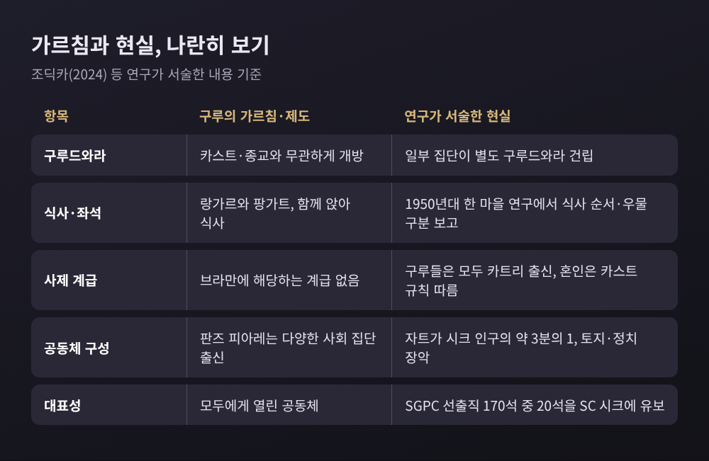
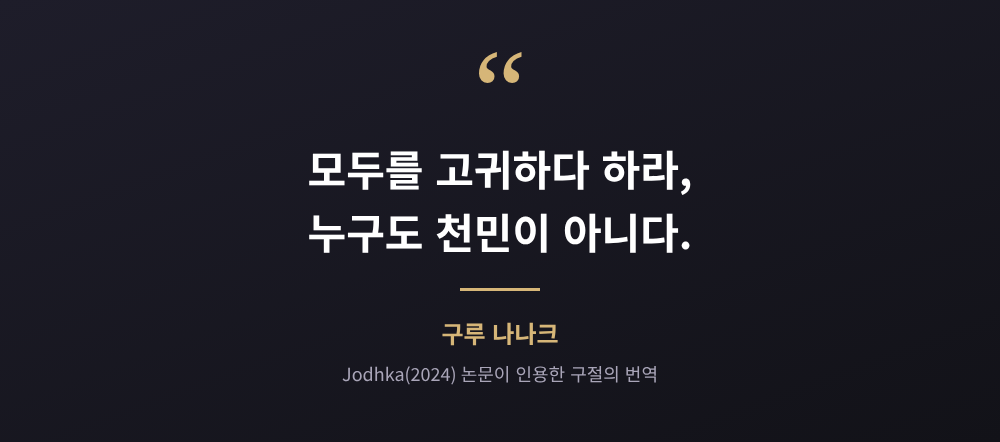
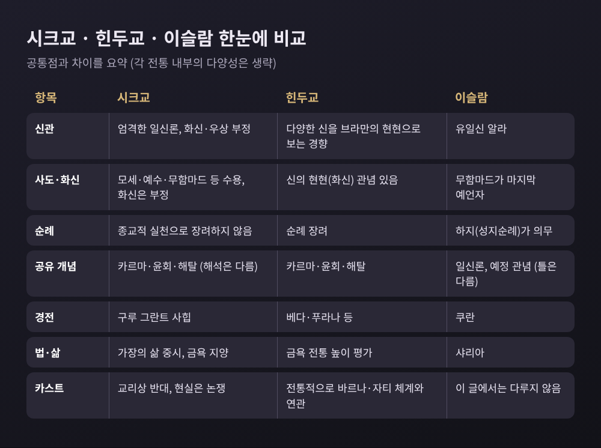

이번 글에서는 시크교의 평등 사상을 정리해 보려 합니다. 구루 나나크가 무엇을 가르쳤는지, 그 이상이 칼사와 5K 같은 실천으로 어떻게 이어졌는지, 오늘날 카스트 문제는 어떻게 논의되는지를 살핍니다. 힌두교·이슬람과의 관계도 비교종교학의 관점에서 함께 짚어 보겠습니다.
세 줄 요약
- 구루 나나크(1469~1539)는 신의 하나됨과 인간의 평등을 가르쳤고, 사제 매개와 바르나 위계를 비판했습니다.
- 칼사(1699)와 5K, 구루 그란트 사힙은 그 평등을 제도와 상징으로 옮긴 장치입니다.
- 그럼에도 펀자브에는 카스트가 남아 있어, 학계는 그 이유를 서로 다르게 설명합니다.
나나크는 1469년 오늘날 파키스탄의 난카나 사힙 일대에서 태어났습니다. 부모는 힌두 카트리 상인 집안이었고, 아버지는 지역 세무 서기였습니다. 그는 가정을 꾸리고 관청에서 일하다가 새로운 길로 들어섰다고 전해집니다.
중심 메시지는 이크 온카르, 곧 하나이신 신입니다. 그 아래에서 사람은 출신과 무관하게 같은 자리에 선다는 것이 평등 사상의 뿌리입니다.
실천 원칙은 세 가지로 요약됩니다.
눈여겨볼 대목은 금욕을 권하지 않았다는 점입니다. 산속에 들어가는 대신 가장으로 일하고 나누며 사는 길을 택했습니다. 만년의 약 20년은 카르타르푸르에서 농사를 지으며 노동과 예배를 함께하는 공동체를 이끌었다고 합니다.
학술 논문에는 그의 말로 "모두를 고귀하다 하라, 누구도 천민이 아니다"가 인용됩니다. 한 학자는 나나크가 "가장 낮은 자 중의 가장 낮은 자"와 스스로를 동일시했다고 해석합니다.
다만 한 가지 단서를 달아야 합니다. 나나크의 생애를 전하는 주된 전기 자남사키는 그의 사후 한참 뒤에 쓰였습니다. 역사와 전설이 섞여 있어, 여행 이야기나 정확한 탄생일은 학계에서도 논쟁이 이어집니다. 이 글은 그 한계를 전제로 읽어 주시기 바랍니다.
나나크가 세운 공동체에는 상가트(회중)와 팡가트(나란히 앉기)가 있었습니다. 랑가르는 구루 아마르 다스 때 카스트와 계급을 가리지 않고 함께 먹도록 의무화되었습니다. 이 주제는 이미 공동 식사를 비교한 글에서 다뤘으니 여기서는 한 줄만 적습니다. 평등이 설교에 머물지 않고 앉는 자리의 규칙이 되었다는 점입니다.
더 눈에 띄는 장치는 경전입니다. 구루 그란트 사힙은 1,430앙으로 이루어져 있고, 구루 아르잔이 1604년 편찬을 마친 뒤 1708년 구루 고빈드 싱이 영원한 구루로 선언했습니다. 이 경전에는 구루들의 찬가만 있지 않습니다. 힌두 박티 성자들, 이슬람 수피 셰이크 파리드의 작품도 함께 실려 있습니다. 카비르의 시는 비시크 기여분 중 가장 큽니다.
조딕카의 논문은 당시 힌두 사회에서 '불가촉천민'에 해당했을 시인들의 글을 시크 경전이 신성한 것으로 다룬다고 서술합니다. 예전엔 낮은 신분의 목소리가 사원 밖에 있었습니다. 시크 경전에서는 같은 책 안에 놓입니다.
1699년 4월 13일, 구루 고빈드 싱은 아난드푸르 사힙에서 칼사를 세웠습니다. 목숨을 내놓을 지원자 다섯이 앞으로 나섰고, 이들이 판즈 피아레, 곧 '사랑받는 다섯'입니다. 양날검으로 저은 설탕물 암리트를 나누어 마셨고, 남성은 '싱(사자)'이라는 이름을 받았습니다. 이어 이 다섯이 구루 자신에게도 입문 의식을 베풀었고, 그는 고빈드 라이에서 고빈드 싱이 되었다고 전해집니다. 전승은 이때 모든 카스트가 한 그릇에서 먹었다고 전합니다.
칼사에 입문한 시크는 다섯 가지 상징을 지닙니다. 모두 K로 시작해 5K라 부릅니다.
5K는 입문한 암리트다리 시크의 표지이고, 남녀와 여러 카스트가 함께 입문했다는 점이 평등의 제도화로 언급됩니다. 다만 5K 각각의 의미를 어떻게 풀이하는지는 시크 안에서도 다양하므로, 여기서는 목록만 적습니다.
칼사의 역사를 두고도 이견이 있습니다. 1699이라는 연도는 19세기 후반 저작을 통해 널리 퍼졌고, 초기 사료는 1695~1698년이나 1689년을 가리키기도 합니다. 여성 입문과 '카우르' 칭호의 시기도 학자마다 다르게 봅니다. 칼사를 평등적으로 읽는 연구가 있는가 하면, 초기 규범에서 여성이 부수적으로 그려졌다고 보는 연구도 있습니다.
저는 이 대목에서 단정하지 않는 편이 정직하다고 생각합니다. 평등의 상징이 있었다는 사실과, 그것이 어디까지 실현되었는가는 별개의 질문이기 때문입니다.
여기서 많은 독자가 궁금해하실 질문이 나옵니다. 카스트를 부정한 종교라면, 시크 사회에는 카스트가 없을까요.
2024년 『Religions』에 실린 조딕카(Jodhka)의 논문은 현실이 간단하지 않다고 정리합니다. 열 구루가 모두 카트리 출신이었고 혼인은 카스트 규칙을 따랐다는 점부터가 그렇습니다. 펀자브 인구의 약 32%가 지정카스트이고, 한 추정으로는 그중 3분의 2가 시크입니다. 자트(Jat)는 시크 인구의 거의 3분의 1로, 토지와 정치를 쥐어 왔습니다.
달리트 시크 일부는 자신들의 구루드와라를 따로 세웠습니다. 1999~2000년 51개 마을 조사에서도 이런 경향이 확인되었습니다. 영국에서도 카스트 집단별 구루드와라가 생겼고, 결혼은 같은 집단끼리 하는 경우가 많다고 보고됩니다. 2003년 탈한에서는 달리트가 사원 관리위원회 자리를 요구해 약 6개월의 항의 끝에 받아들여졌습니다. 달리트의 구루드와라 출입이 1920년 개혁 운동으로 열렸다는 점도 기억할 만합니다.

수치도 하나 있습니다. 2021년 퓨리서치 조사에서 시크의 77%는 지정카스트 이웃을 받아들이겠다고 답했고, 74%는 가까운 친구 대부분이 같은 카스트라고 답했습니다.
원인을 두고 학계의 설명은 갈립니다.
어느 쪽이 맞는지 이 글에서 판정하지는 않습니다. 다만 하나는 분명합니다. 구루들의 메시지가 지금도 위계 없는 미래를 상상하는 자원으로 읽힌다는 점입니다. 여성의 경우도 비슷합니다. 경전은 여성을 낮추는 말을 물으며 비판하지만, 공개 낭송과 설교는 아직 남성이 주로 맡는다고 보고됩니다.

나나크의 첫 말로 전해지는 문장은 "힌두도 없고 무슬림도 없다"입니다. 하버드 플루럴리즘 프로젝트가 소개하는 전승입니다. 이 문장은 종교를 부정한 것이 아니라 어느 한쪽의 울타리에 갇히지 않겠다는 선언으로 읽히곤 합니다.
힌두교와는 카르마, 다르마, 윤회, 해탈 같은 개념을 나눕니다. 갈라지는 지점도 분명합니다. 시크교는 엄격한 일신론이고 신의 화신을 인정하지 않으며, 우상 숭배·조상 제사·길일 관념을 받아들이지 않습니다. 금욕보다 가장의 삶을 높게 봅니다.
이슬람과는 유일신 신앙이 닿아 있습니다. 나나크의 동반자 마르다나는 무슬림이었고, 경전에는 파리드와 카비르가 실려 있습니다. 반면 시크교에는 샤리아가 없고 하지(성지순례)도 없습니다. 무함마드를 마지막 예언자로 보는 이슬람과 달리, 시크교는 모세·예수·무함마드를 비롯한 다른 사도도 받아들입니다. 구루 아르잔과 구루 테그 바하두르가 무굴 통치자에게 처형된 아픈 역사도 있습니다. 1947년 분단 때는 시크·힌두·무슬림 사이에 큰 유혈 사태가 있었습니다.

그렇다면 시크교는 무엇일까요. 서구 학계는 대체로 힌두 박티 운동의 맥락에 두고 수피의 영향을 인정합니다. 일부 인도 시크 학자는 베다 전통과 단절했다는 점에서 환경을 넘어선 독자 종교라고 말합니다. 많은 시크는 힌두교와 이슬람의 혼합이라는 규정에 반대합니다. 19세기 싱 사바 운동 안에서도 개혁된 힌두교로 보는 흐름과 배타적 시크 정체성을 세우려는 흐름이 맞섰고, 후자가 우세해졌습니다.
이 글은 그중 하나를 정답으로 고르지 않습니다. 학술적으로 열려 있는 문제로 두고, 각 입장의 근거를 나란히 보여 드리는 데 그칩니다.
정리하면 이렇습니다.
시크교의 평등 사상은 한 문장의 선언이 아니었습니다. 나란히 앉는 자리, 한 책에 모인 여러 목소리, 모두가 받는 이름과 상징으로 옮겨졌습니다. 동시에 그 이상이 농촌의 토지, 혼인, 정치 속에서 얼마나 힘겹게 실현되어 왔는지도 기록되어 있습니다.
"이상은 선언으로 끝나지 않고, 현실과의 거리까지 포함해 읽어야 한다."
종교의 가르침과 신자의 삶 사이를 비교하며 읽는 일이 서로를 이해하는 첫걸음이 아닐까요. 여러분이 아는 어떤 전통에서는 그 거리가 어떻게 놓여 있는지, 한번 되짚어 보시길 권합니다.
참고: Jodhka(2024) "Sikh Religion and Contentions around Caste"(Religions), Pew Research Center(2021), Harvard Pluralism Project, Wikipedia 및 SikhiWiki 관련 항목 등. 위키 계열은 2차 자료입니다.